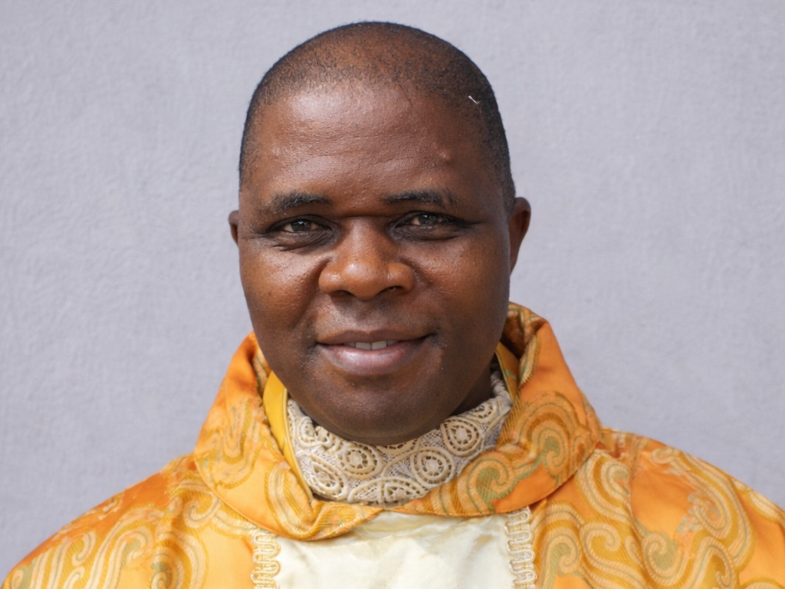
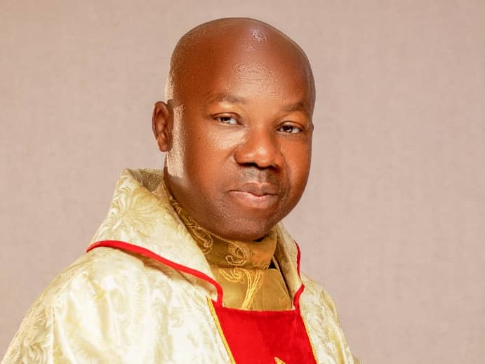

About the Diocese of Okigwe
Our history, identity, mission, vision, and the leadership that shepherds our community of faith.
The Catholic Diocese of Okigwe
Okigwe Catholic Diocese was evangelized by the missionaries from two wings namely: Adazi in Anambra State and Emekuku in Owerri (Imo state). While Okigwe North was evangelized from Adazi, Okigwe South was taken care of from Emekuku. Consequently, they created two Missions: Holy Cross Mission, Uturu (1912) and St. Columbas' Mission Nsu (1917). From these two Missions, the Catholic faith sprouted and began to grow into what we have today as Okigwe Diocese. The Church in the zone continued to grow from strength to strength under the able leadership of Bishop A. G. Nwedo of Umuahia Diocese.
On January 24, 1981, His Holiness Pope John Paul II carved out Okigwe zone from Umuahia Diocese and elevated it into a diocese of its own. Most Rev. Anthony Ekezia Ilonu who was appointed by the Holy Father as the pioneer bishop was consecrated on March 29, 1981. Bishop A. E. Ilonu diligently pastured this diocese for 25 years. Briefly before his retirement, the then Auxiliary Bishop of Awka, Most Rev. Solomon Amanchukwu Amatu was appointed the Coadjutor Bishop of Okigwe Diocese on July 16, 2005. Bishop S. A. Amatu took over as the diocesan Bishop of the diocese at the retirement of Bishop Ilonu on April 22, 2006 and was installed on July 1, 2006.
The Diocese is currently blessed with 134 parishes, 19 parishes-in-building and 9 chaplaincies. She has 550 priests, 128 major seminarians and 507 minor seminarians. Serving in the Diocese are 38 Religious Men and 257 Religious women of different religious congregations. The Diocese is dedicated to Our Lady, Immaculate Conception.
Our Mission
To proclaim the Gospel of Jesus Christ, administer the Sacraments faithfully, and build a community of disciples who serve God and humanity with justice, compassion, and integrity — leaving no soul behind.
Our Vision
A Diocese fully alive in faith — where every Catholic is an active witness of Christ's love, the poor are uplifted, families are strengthened, and all people encounter the saving grace of God.
Core Values
Faith • Service • Compassion • Stewardship • True Leadership • Community • Excellence
The Diocese at a Glance
A Glance at our Diocesan Directory
Explore the life and ministry of the Catholic Diocese of Okigwe through the Official Directory. From our Clergy and Religious to our Parishes, Institutions, and Diocesan Offices.
Diocesan Leadership

Diocesan Curia
Priests' Welfare, Seminary and Biblical Commision
Very Rev. Msgr. John C. Iwe
Vicar General I

Vicar General II
Very Rev. Fr. Bartholomew Nnaemedo
Vicar General II
Pastoral Commission
Very Rev. Fr. Josephat Nwankwo
Episcopal Vicar, Okigwe Zone
Ecumenical Commission
Very Rev. Msgr. Simon O. Anyanwu
Episcopal Vicar for CLergy

Chancellor/Secretary
Very Rev. Fr. Samuel Obinnaya Okoli
Judicial Vicar and Medical Commission
Very Rev. Fr. Michael Agbayi
Diocesan Financial Administrator
Rev. Fr. Livinus Iroh
Pontifical Mission Societies
Rev. Fr. Christian Egwuekwe
Liturgical Commision
Rev. Fr. Patrick Ugwaka
Land/Legal Commission
Very Rev. Fr. Oliver Mbagwu
Family and Human Life Commission
Rev. Fr. Prof. Clement Uche

Education Commission
Rev. Fr. Isaac Ogu
Sacred Music Commission
Rev. Fr. Anthony Dieme
Justice, Dev. & Peace Commission
Rev. Fr. Anthony Jiwuba
Catechetical Commission
Rev. Fr. Michael Nwosu (II)
Inculturation/Inter-religious Dialogue Commission
Rev. Fr. Vitalis Ekemmiri
Meet the Deans of our Various Deaneries
Dean of Okigwe Deanery
Rev. Fr. Michael Ohanete
Dean of Ehime East Deanery
Msgr. Jeremiah Ofoegbu
Dean of Ugiri/Mbama Deanery
Rev. Fr. Jacob Okafor
Dean of Osu Deanery
Rev. Fr. Kenneth Ekeugo
Dean of Obowo East Deanry
Rev. Fr. JudeKingsley Maduka
Dean of Obowo West Deanery
Rev. Fr. Michael Okafor
Dean of Uboma Deanery
Rev. Fr. Kevin Ohalete
Dean of Uturu Deanery
Rev. Fr. Cyril Agodi
Dean of Onuimo Deanery
Rev. Fr. Michael Nwosu
Dean of Umunneochi Deanery
Rev. Fr. Cletus Okoye
Dean of Isuikwuato Deanery
Rev. Fr. Daniel Odoh
Dean of Ihitte Deanery
Rev. Fr. Fidelis Ekemgba
Dean of Ehime West Deanery
Rev. Fr. John Ifebuigbo
Find Your Parish Family
Discover a parish community near you and begin or deepen your journey of faith.